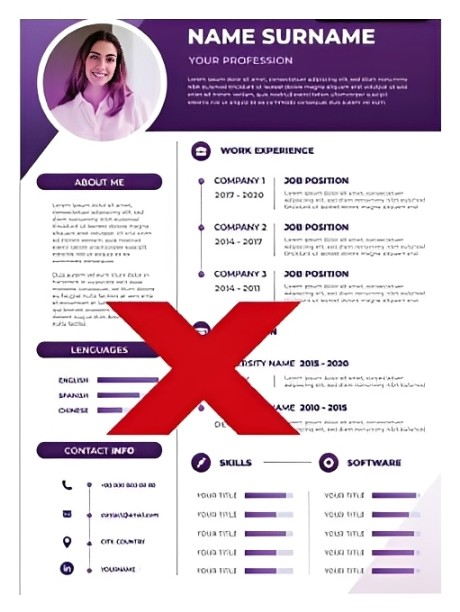
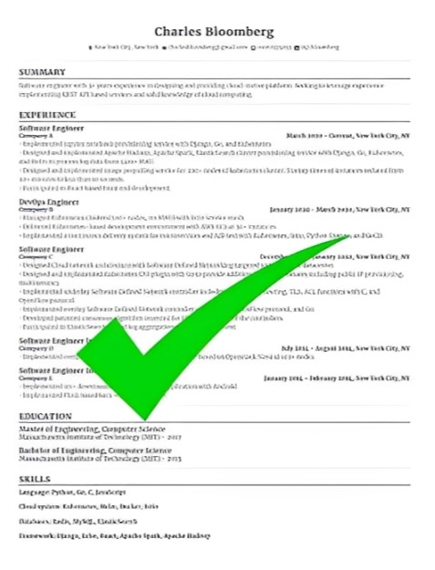

Our AI analyzes your resume in second- scoring it, identifying gaps, and giving you precise action steps to land more interviews at a top companies.
Upload your resume and get an instant
AI-powered score with
detailed improvement suggestions.
Drag & Drop Your Resume Here
PDF, DOC, or DOCX supported - or click to browse
How It Works
Built Your Job Winning Resume
In Simple Four Step Process
STEP 1
Upload Your Resume
Simply drag and drop your existing resume in PDF, DOC, or DOCX format. No account needed to get started.
STEP 2
AI Scans & Analyzes
Our GPT-powered engine reads every line - checking keywords, ATS compatibility, formatting, and impact statements.
STEP 3
Get Your Score & Insights
Reseive a detailed score breakdown with specific, actionable recommendations ranked by hiring impact.
STEP 4
Optimize & Apply
Use our built-in editor to apply suggestions instantly, then export your polished resume and start applying.


ATS Resume Checker
An Applicant Tracking System (ATS) is software used by companies to
manage job applications. It scans resumes for relevant keywords,
skills, experience, and formatting before a recruiter reviews them.
Upload your resume and discover how well it performs with
Applicant Tracking Systems (ATS).Receive an ATS
compatibility score identify missing keywords, and get
actionable recommendations to improve your chances
of reaching recruiters.
Build Your
Professional
Resume
Create a polished, ATS-friendly resume in minutes with
our intuitive resume builder. Choose a template,
fill in your details, and download a professional resume
ready for job applications.
Our Users Have Been Hired At
FREQUENTLY ASKED QUESTIONS
An ATS (Applicant Tracking System) Resume Checker analyzes your resume to see how well it matches ATS software used by employers. It evaluates keywords, formatting, readability, and overall compatibility to help improve your chances of getting shortlisted.
Simply upload your resume and, if available, paste the job description. Our AI analyzes your resume, calculates an ATS score, identifies missing keywords and skills, and provides personalized suggestions to improve it.
No. Your privacy is important to us. Your resume is processed securely and is not shared with third parties. You remain in control of your data.
The ATS Score indicates how well your resume follows common ATS best practices. It considers factors such as formatting, keyword relevance, readability, and how closely your resume aligns with the job description.
Yes. Paste the job description along with your resume, and the analyzer will compare them to calculate a match percentage, identify missing keywords, and highlight skill gaps.
Yes. You can analyze your resume using the free version. Additional advanced features may be available in premium plans, depending on the platform.
YOUR DREAM JOB IS ONE
RESUME AWAY
Join 50,000+ professionals who've transformed their careers with us.
Analyzes your resume free - no credit card required.
© Copyright 2026 AI Resume Analyzer. All rights reserved.